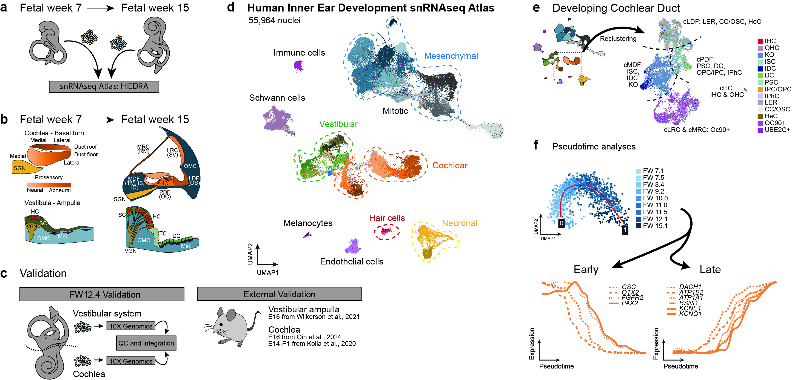

A Single-Nucleus Atlas of Human Prenatal Inner Ear Development called HIEDRA
The Human Inner Ear Development snRNAseq Atlas (HIEDRA) is a single-nucleus transcriptomic atlas of the whole developing human inner ear across early prenatal timepoints. This interactive resource enables exploration of gene expression in the context of developmental progression and lineage programs across cochlear, vestibular, and shared cell types.

HIEDRA overview and gEAR visualizations.
- A: Prenatal inner ear samples spanning fetal week (FW) 7 to FW15 used to generate the HIEDRA single-nucleus atlas.
- B: Schematic of profiled anatomical compartments and domains in the cochlea and vestibular system, highlighting key epithelial regions and associated cell types.
- C: Validation workflow: FW12.4 cochlea and vestibular system processed separately and external cross-species validation using published datasets.
- D: The Human Inner Ear Development snRNAseq Atlas (HIEDRA) dimensional reduction of the 55,964 nuclei, accessible through link 1 and 2.
- E: Table displaying the number of datasets loaded into Cancer gEAR for each publication.
- F: Pseudotime analyses: cells ordered along developmental trajectories, showing alignment with prenatal age (FW7–FW15) and example gene-expression dynamics from early to late states along pseudotime. Data accessible through link 4 and 5
Dataset at a glance
- ~56.000 nuclei from 9 prenatal specimens across fetal weeks 7 to 15.
- Whole inner ear coverage, including cochlear and vestibular epithelia, neurons, as well as mesenchyme-associated cell types.
- Cross-species validated annotations
What you can do here
- Explore a global atlas overview: interact with a whole-dataset UMAP, query any gene, and inspect expression with accompanying plots.
- See developmental timing within cell types: view gene expression stratified by prenatal age (fetal weeks of development) so temporal changes are easy to interpret within each annotated cluster.
- Zoom in on cochlear epithelium (high resolution): access gene expression within a cochlear epithelial view with refined clustering.
- Inspect developmental dynamics: explore pseudotime-based gene expression trends along key developmental trajectories.
Projection links
| LINK | Human Inner Ear Development snRNAseq Atlas - UMAP | UMAP Human Inner Ear Development snRNAseq Atlas, Fetal Weeks 7 through 15, HIEDRA (Van der Valk, 2026) |
| LINK 2 | Human Inner Ear Development snRNAseq Atlas – Time-separated VLN plots | VLN plots Cochlear, Vestibular and Other |
| LINK 3 | Cochlear duct – high resolution UMAP | Cochlear Duct Annotations UMAP and VLN plots |
| LINK 4 | Pseudotime - sensory epithelia | Pseudotime analyses cPDFandcHC, vHC, vASC and vOSC |
| LINK 5 | Pseudotime - secretory epithelia | Pseudotime analyses cLRC and vDC |